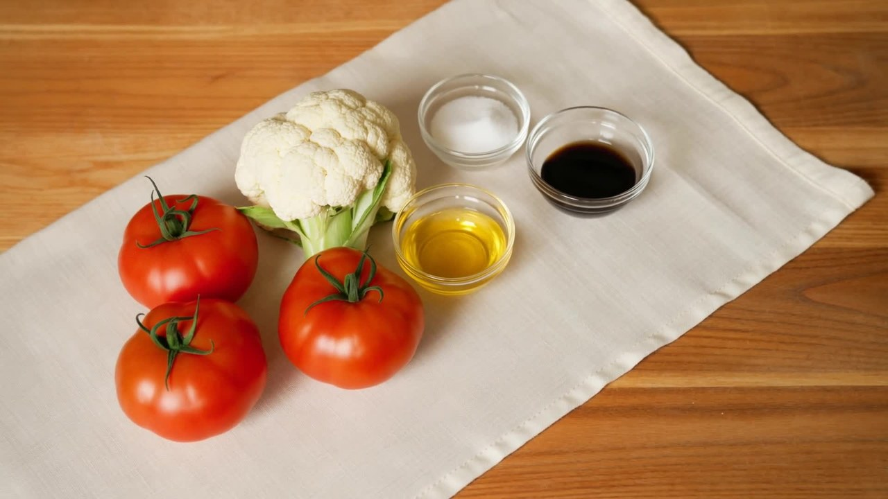

Meditation · Cooking Meditation
Tomato Cauliflower
Today we are making Tomato Cauliflower. Simple, healthy, and a quiet cooking practice.

We cook it in the Thermomix. This is the blender we use today.

The Ingredients

- Ripe tomatoes3
- Cauliflower400g
- Vegetable oil18g
- Salt5g
- Light soy sauce8g
Four Steps
Here is the full recipe. First, prep the tomatoes and cauliflower. Then blend the tomatoes in the Thermomix. Next, cook the cauliflower. Then plate.
01 Prep
Peel the tomatoes and cut them in half. Wash the cauliflower and cut it into even florets.

02 Blend
Put the tomatoes in the Thermomix.
Blend at speed 6 for 5 seconds. Add 18g oil. Cook 2 minutes at 120°, reverse, spoon speed.

03 Cook
Add the cauliflower, 5g salt, and 8g soy sauce. Cook 8 minutes at 120°, reverse speed 1.

04 Plate
Taste, then plate. Sweet, tangy, and light. Simple ingredients. A healthy life.